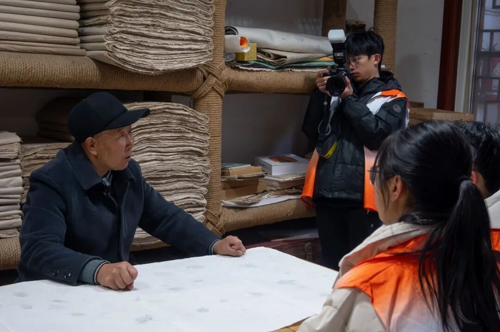
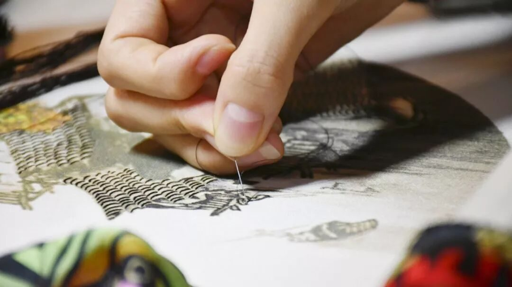
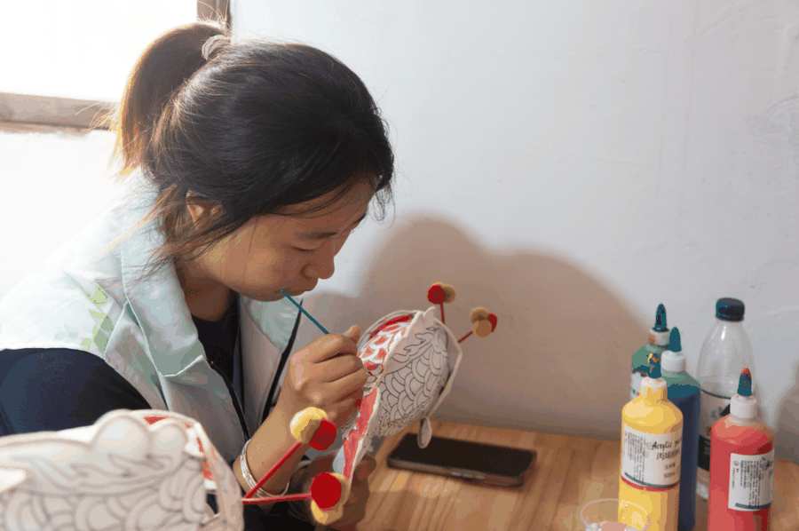
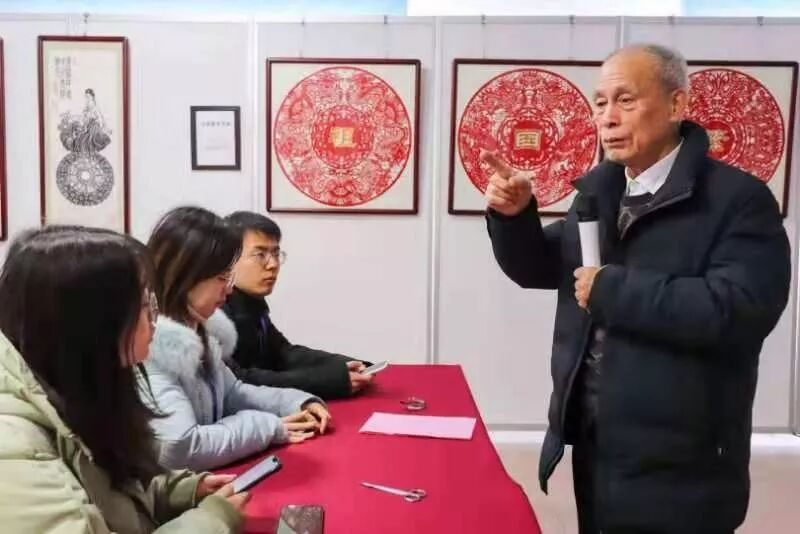

18↗
18↗
青年文化调研 / 始于 2016FIELD NOTES — VOL. 018
行者无疆
WALKERS
WITHOUT
BORDERS大连理工大学盘锦校区




01 / 我们为什么出发BEYOND THE CLASSROOM
从远方，
读懂身边。
2016 年冬，「行者无疆」在大连理工大学盘锦校区启程。十八期实践，我们带着问题走进街巷、工坊与博物馆，向真实的文化现场学习。
齐鲁的儒风，徽州的笔墨，山城的匠心。让我们不断出发的，是那些值得被听见的人、值得被记录的细节。
认识行者无疆 ↗THE WALKERS 走过的路，
有他们的名字。 翻开行者名录 ↗
02 / 行走档案18 EXPEDITIONS · OPEN ARCHIVE
18 期档案，往下还有更多↓
18↗
从文溯齐鲁，到文韵皖南。沿时间，重走一次 ↗
03 / 在场的证据REAL PEOPLE. REAL MOMENTS.
有温度的，
从来是人。
相机向着手，
也向着眼睛里的认真。打开影像记录 ↗






← 滑动翻阅现场影像 →图像选自团队历史实践推文
04 / 把路写下来LET THE STORIES CONTINUE

THE NEXT CHAPTER / 下一段行走
世界很大，
一起走走。
写作、摄影、访谈、调研。
带上你的好奇心，成为下一段故事里的人。